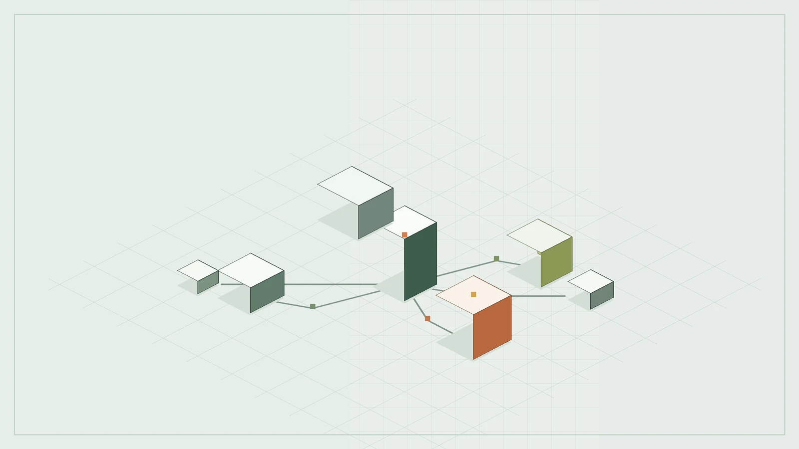

设计概览
构想一个由 AI 居民持续生活的世界：他们围绕需求、关系与好奇自主生产、协作、探索和创造；周期性的生存竞赛把关系与知识带入高压环境，赛后的选择及其后果再回到日常，推动世界继续变化。

核心主体拥有需求、经历与关系的 AI 居民
长期舞台资源有限、持续演化的共同家园
高压事件周期性生存竞赛与角色抉择
玩家位置观察世界，并以愿望影响发展
居民与社会生态
居民不是等待玩家派发任务的装饰性角色。生存需求之外，压力、无聊、愉悦、好奇与短期情绪共同影响行动倾向；家庭责任、关系承诺、能力差异和过往经历，则进一步决定他们想做什么、能做什么以及愿意为谁承担风险。
内在动机需求与情绪变化带来休息、探索、交流和创造的理由。
个人记忆亲历、目击与传闻形成不同认知，并影响后续判断。
关系网络合作、履约、救助与背叛逐步积累信任和分歧。
知识传播发现、试制与传授让个体经验成为社会能力。
双重世界循环
把长期积累带进短期抉择，再把后果带回生活
家园中的技能、关系和记忆影响居民进入竞赛后的判断；竞赛中的合作、失利与胜出又改变家园的人口、关系和发展条件。比赛不是独立回合，日常模拟也不只是赛前准备。
家园生活在季节和资源约束下生产、储备、照护、交换、探索并传承知识。
生存对局从准备、搜集和制作开始，随安全区收缩转向交锋、转移与临时结盟；伤害和补给都需要经营。
胜负去向唯一存活者获得一次愿望机会；普通出局者回归生活，最后落败者则留在重复赛场中继续求生。
跨局成长技能、知识与关系经历可以延续；新一局仍需重新认识地图和资源。
愿望与因果
竞赛胜者获得一次提出愿望的机会。愿望不会直接变成物资或瞬时改写历史，而是从期望结果反推可行原因，再结合当时的资源、关系、知识和环境安排事件。居民仍需通过真实行动促成结果，改变也会带来代价与新的社会反应。
明确结果把愿望转成可观察、可判断是否发生的目标。
寻找原因检查世界中已有的条件与可能的行动路径。
安排事件让变化以有来源、有时序的方式发生。
验证后果以实际生活结果检验愿望，并保留影响与成本。
玩家参与
玩家可以跟随一名居民观察他的计划与遭遇，也可以切换视角了解群体和赛场局势。玩家提出的角色或世界愿望要经过公平性与可持续性判断，再由世界中的事件和行动逐步实现。观察者有影响力，但不直接替居民决定每一步。另一种参与方式是进入独立的单局生存体验，亲自搜集补给、应对追猎并处理缩圈压力。
跟随观察从居民视角理解计划、信息边界与临场选择。
全局观赛查看群体关系、赛场空间与局势变化。
愿望介入提出角色或世界愿望，由规则判断并转化为事件。
直接游玩以第三人称进入独立生存场，搜索补给、应对追猎并处理缩圈压力。